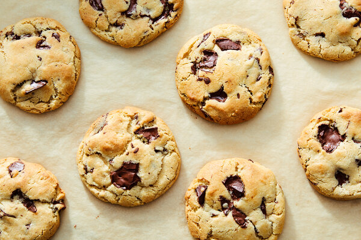

Choco-chip Cookies

Chocolate chip cookies are the perfect snack. These sweet and flavourfull cookies make everyone happy one bite at a time.
This cookies will give you major brownie points in the next neighbourhood cookout.
Ingredients
- Unsalted butter
- Dark brown sugar
- fine sugar
- Egg
- all-purpose flour
- baking powder
- baking soda
- dark chocolate
Steps
- Put the butter and both sugars in a stand mixer or mixing bowl. Cream together using a paddle attachment on medium speed, a handheld electric whisk or a wooden spoon for 1 to 2 minutes until paler but not fluffy. (Do not mix for too long; if you beat the mixture until super light and fluffy, that will cause the cookie to deflate later when cooking.)
- Add the egg and beat over medium speed until evenly combined.
- In a separate bowl, mix together the dry ingredients (all the flour, baking powder, baking soda and salt), then fold into the butter mixture using a rubber spatula until combined.
- Add the chopped chocolate and fold into the dough until evenly distributed.
- Immediately scoop out heaping 1/4-cup portions (about 60 grams), roll into balls and place on two baking sheets lined with parchment paper. Cover with plastic wrap and refrigerate at least 12 hours. (If space is tight, you can condense them on one sheet before refrigerating then redistribute among two sheets before baking.)
- The next day, heat the oven to 350 degrees.
- Make sure the dough balls are evenly spaced out among two baking sheets, as they will spread. Bake the cookies for 13 minutes (or 15 minutes if baking from frozen), until the cookies are puffed and golden at the edges. You want the middle to be ever so slightly not-quite set.
- Allow the cookies to cool on the baking sheet; they will continue firming up as they cool. Once cooled, eat! (These cookies will keep in an airtight container for up to 3 days. The balls of dough will keep for up to 2 days in the fridge or 2 weeks in the freezer.)